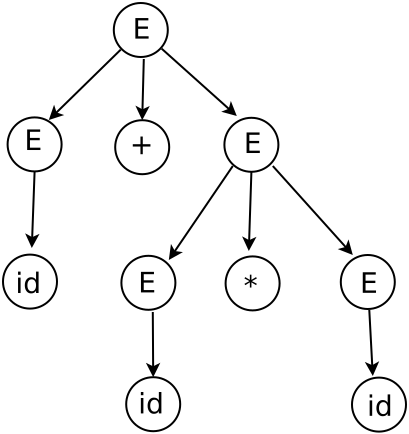
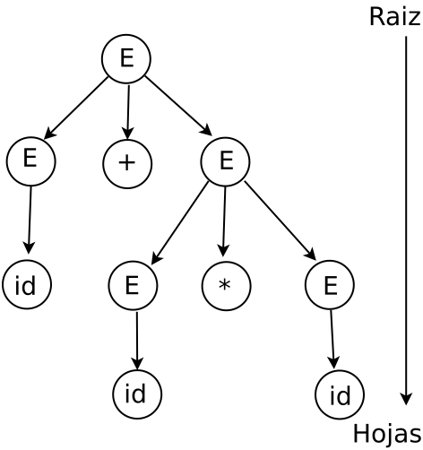
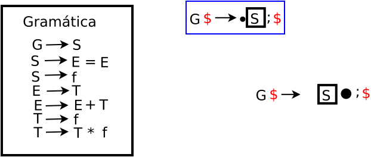
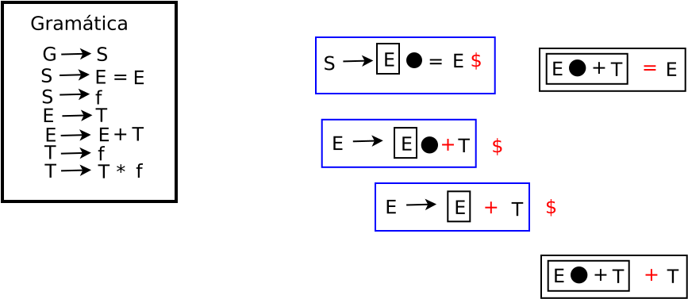
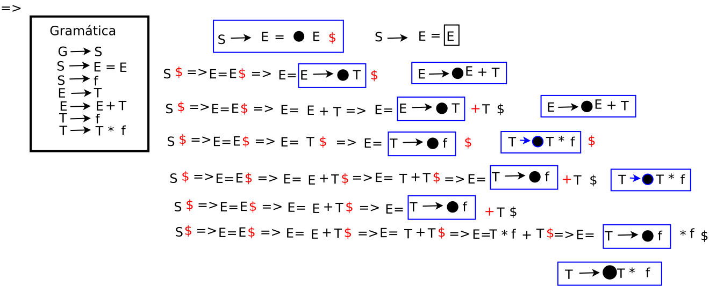
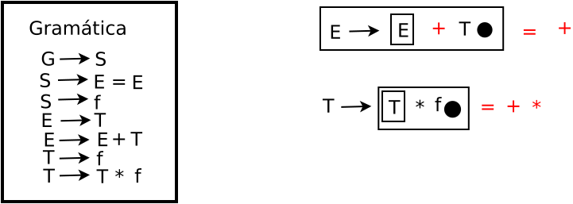
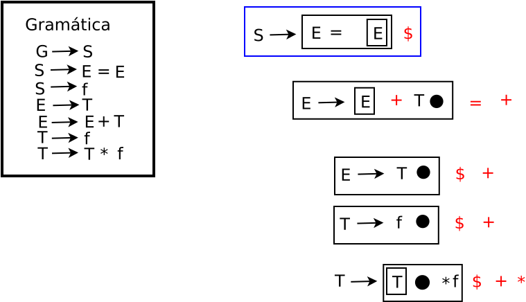
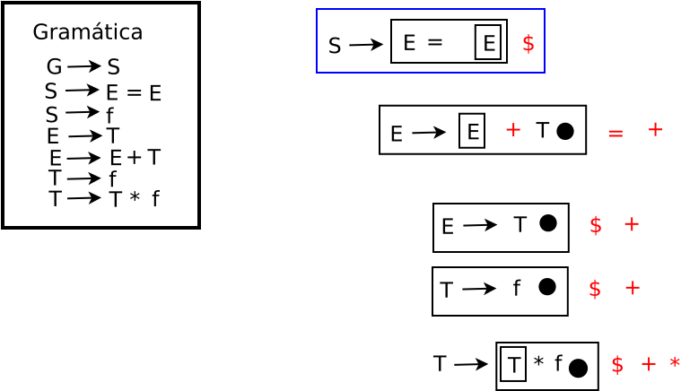
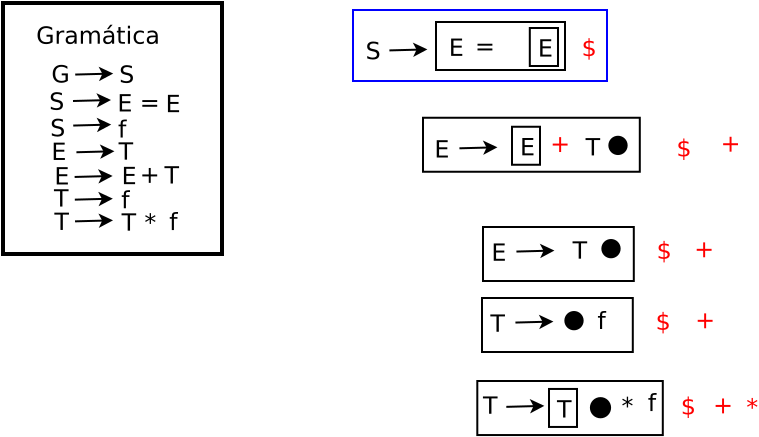
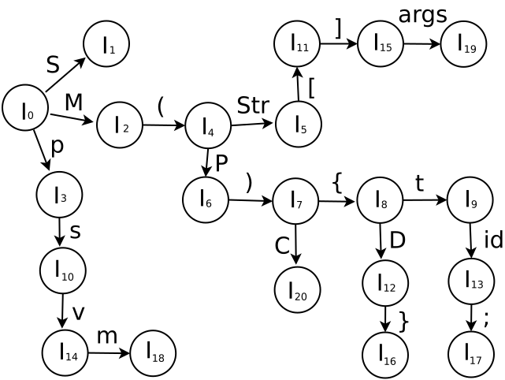

Analizadores sintácticos ascendentes
Este analizador también se conoce como analizador por desplazamiento y reducción. Este analizador intenta construir un árbol de análisis sintáctico para una cadena de entrada que comienza por las hojas (el fondo) y avanza hacia la raı́z (la cima).
Derivación por la derecha. Esta derivación se hace considerando el símbolo no terminal que esta en la extrema derecha.
Consideremos la siguiente gramática:
E → E + T | T
T → T * F | F
F → (E) | id
Se considera la siguiente cadena de tokens id + id * id, por lo que esta se obtiene por medio de las derivaciones derechas:
E ⇒ E + T ⇒ E + T * F ⇒ E + T * id ⇒
E + F * id ⇒ E + id * id ⇒ T + id * id ⇒
F + id * id ⇒ id + id * id
Esta derivación colocada en un árbol de análisis sintáctico:

Descendentes. El análisis se hace de la raiz a las hojas.

Se muestra en la tabla cómo el análisis se hace de la raiz a las hojas.
| ENTRADA | PILA | NUM. PRODUCCIÓN |
|---|---|---|
| ↑ public class {double radio;}$ | $S | 1 |
| ↑ public class {double radio;}$ | $};LV T{ class ● public | ← |
| public ↑class {double radio;}$ | $};LV T{ ● class public | ← |
| public class ↑{double radio;}$ | $};LV T●{ class public | ← |
| public class {↑double radio;}$ | $};LV ●T{ class public | 4 |
| public class {↑double radio;}$ | $};LV ●double{ class public | ← |
| public class {double ↑radio;}$ | $};●LV double{ class public | 5 |
| public class {double ↑radio;}$ | $};LV'● V double{ class public | 8 |
| public class {double ↑radio;}$ | $};LV' ● radio double{ class public | ← |
| public class {double radio↑;}$ | $};●LV' radio double{ class public | 7 |
| public class {double radio↑;}$ | $}●; ε radio double{ class public | ← |
| public class {double radio;↑}$ | $●}; ε radio double{ class public | ← |
| public class {double radio;}↑$ | ●$}; radio double{ class public | Acep |
Ascendentes. El análisis se hace de las hojas a la raiz.

Se muestra en la tabla cómo el análisis se hace de las hojas a la raiz.
| ENTRADA | PILA | ACCIÓN |
|---|---|---|
| ↑id ∗ id + id$ | $I0 | - |
| ↑id ∗ id + id$ | $I0 | d5 |
| id ↑∗ id + id$ | $I0 id I5 | r6 |
| id ↑∗ id + id$ | $I0 F I3 | r4 |
| id ↑∗ id + id$ | $I0 T I2 | d7 |
| id ∗ ↑id + id$ | $I0 T I2 * I7 | d5 |
| id ∗ id ↑+ id$ | $I0 T I2 * I7 id I5 | r6 |
| id ∗ id ↑+ id$ | $I0 T I2 * I7 F I10 | IR_A 10 |
| id ∗ id ↑+ id$ | $I0 T I2 | r3 |
| id ∗ id ↑+ id$ | $I0 E I1 | r2 |
| id ∗ id + ↑id$ | $I0 E I1 + I6 | d6 |
| id ∗ id + id↑$ | $I0 E I1 + I6 id I5 | d5 |
| id ∗ id + id↑$ | $I0 E I1 + I6 F I3 | r6 |
| id ∗ id + id↑$ | $I0 E I1 + I6 T I9 | r4 |
| id ∗ id + id↑$ | $I0 E I1 | r1 |
| id ∗ id + id↑$ | $I0 E I1 | acep |
Engineering a compiler, Keith D. Cooper and Linda Torczon, Pág. 1-3
Elementos LR(0)
Elementos LR(1)
Los elementos LR(0) se muestran a continuación:
E → • E + T
E → E • + T
E → E + • T
E → E + T •
E → • T
E → T •
Los elementos LR(1) estan formados de un núcleo y símbolos de análisis, lo que se muestra a continuación:
E' → • E ; $
E → • E + T ; $
E → • E + T ; +
Los dos últimos dos elementos LR(1), se pueden escribir de la siguiente manera:
E → • E + T ; $, +
E' → • T ; $
Otro elemento LR(1):
E → • E + T ; +
Donde los símbolos terminales son:
$, +, id, (, ), *.
Los elementos LR(1) se presentan a continuación:
E → • E + T ; +
E → E • + T ; +
E → E + • T ; +
E → E + T • ; +
E → • T ; +
E → T • ; +
| NÚMERO | PRODUCCIÓN | C1 | C2 | C3 |
|---|---|---|---|---|
| 0 | E' → | E | ||
| 1 | E → | E | + | T |
| 2 | E → | T | ||
| 3 | T → | T | * | F |
| 4 | T → | F | ||
| 5 | F → | ( | E | ) |
| 6 | F → | id |
Unión de los elementos LR(1)
Para la gramática de expresiones se obtienen los elementos LR(1)
Se obtiene el estado I0 aplicando la operación cerradura al elemento LR(1) de la producción aumentada:
I0 = cerradura( E' → • E ; $ ) = { E' → • E ; $ , E → • E + T ; $ : + , E → • T ; $ : + , T → • T * F ; $ : + : * , T → • F ; $ : * : + , F → • ( E ) ; $ : + : * , F → • id ; $ : + : * }
Se obtiene el estado I1 aplicando la función de movimiento Ir_a para el símbolo E y la operación de cerradura para obtener los elementos LR(1):
I1 = cerradura(Ir_a(I0, E)) = cerradura( E' → E • ; $ , E → E • + T ; $ : + ) = { E' → E • ; $ , E → E • + T ; $ : + }
Se obtiene el estado I2 aplicando la función de movimiento Ir_a para el símbolo T y la operación de cerradura para obtener los elementos LR(1):
I2 = cerradura(Ir_a(I0, T)) = cerradura( E → T • ; $ : + , T → T • * F ; $ : + : * ) = { E → T • ; $ : + , T → T • * F ; $ : + : *}
Se obtiene el estado I3 aplicando la función de movimiento Ir_a para el símbolo F y la operación de cerradura para obtener los elementos LR(1):
I3 = cerradura(Ir_a(I0, F)) = cerradura( T → F • ; $ : * : + ) = { T → F • ; $ : * : + }
Se obtiene el estado I4 aplicando la función de movimiento Ir_a para el símbolo ( y la operación de cerradura para obtener los elementos LR(1):
I4 = cerradura(Ir_a(I0, ()) = cerradura( F → ( • E ) ; $ : * : + ) = { F → ( • E ) ; $ : * : + , E → • E + T ; $ : + : ) , E → • T ; $ : + : ) ; * , T → • T * F ; $ : + : ) : * , T → • F ; $ ; + : ) : * , F → • ( E ) ; $ ; + : ) : * , F → • id ; $ ; + : ) : * }
Se obtiene el estado I5 aplicando la función de movimiento Ir_a para el símbolo id y la operación de cerradura para obtener los elementos LR(1):
I5 = cerradura(Ir_a(I0, id)) = cerradura( F → id • ; $ : * : + ) = { F → id • ; $ : * : + }
Se obtiene el estado I6 aplicando la función de movimiento Ir_a para el símbolo + y la operación de cerradura para obtener los elementos LR(1):
I6 = cerradura(Ir_a(I1, +)) = cerradura( E → E + • T ; $ : + ) = { E → E + • T ; $ : + }
I7 = cerradura(Ir_a(I2, *)) = cerradura( T → T * • F ; $ : + : * ) = { T → T * • F ; $ : + : * }
I8 = cerradura(Ir_a(I4, E)) = cerradura( F → ( • E ) ; $ : + , E → • E + T ; $ : + : ) ) = { F → ( • E ) ; $ : + , E → • E + T ; $ : + : ) }
I9 = cerradura(Ir_a(I4, T)) = cerradura( E → • T ; $ : + : ) , T → • T * F ; $ : + : ) : * ) = { T → T • * F ; $ : + : * }
I10 = cerradura(Ir_a(I1, F)) = cerradura( T → T • * F ; $ : + : * ) = { T → T • * F ; $ : + : * }
ExpresionesI10.svg)
I11 = cerradura(Ir_a(I1, ))) = cerradura( T → T • * F ; $ : + : * ) = { T → T • * F ; $ : + : * }
| ESTADO | CERRADURA | CONJUNTO CERRADURA | DIAGRAMA |
|---|---|---|---|
| I0 | cerr (E' → • E ; $) = | { E' → • E ; $ , E → • E + T ; $ : + , E → • T ; $ : + , T → • T * F ; $ : + : * , T → • F ; $ : * : + , F → • ( E ) ; $ : + : • , F → • id ; $ : + : * } |
|
| I1 | cerr (Ir a(I0, E)) = cerr ( E' → E • ; $ , E → E • + T ; $ : + ) = | { E' → E • ; $ , E → E • + T ; $ : + } |
|
| I2 | cerr (Ir a(I0, T)) = cerr ( E → T • ; $ : + , T → T • * F ; $ : + : * ) = | { E → T • ; $ : + , T → T • * F ; $ : + : * } |
|
| I3 | cerr (Ir a(I0, F)) = cerr ( T → F • ; $ : * : + ) = | { T → F • ; $ : * : + } |
|
| I4 | cerr (Ir a(I0, T)) = cerr ( F → ( • E ) ; $ : + ) = | { F → ( • E ) ; $ : +, E → • E + T ; $ : + : ) , E → • T ; $ : + : ) , T → • T * F ; $ : + : ) : * , T → • F ; $ ; + : ) : * , F → • ( E ) ; $ ; + : ) : * , F → • id ; $ ; + : ) : * } |
|
| I5 | cerr (Ir a(I2, =)) = cerr ( F → id • ; $ : + ) = | { F → id • ; $ : + } |
|
| I6 | cerr (Ir a(I2, +)) = cerr ( E → E • + T ; $ : + ) = | { E → E • + T ; $ : + } |
|
| I7 | cerr (Ir a(I2, * )) = cerr ( T → T • * F ; $ : + : * ) = | { T → T • * F ; $ : + : * } |
|
| I8 | cerr (Ir a(I4 , E)) = cerr ( F → ( • E ) ; $ : +, E → • E + T ; $ : + : ) ) = | { F → ( • E ) ; $ : +, E → • E + T ; $ : + : ) } |
|
| I9 | cerr (Ir a(I4 , T)) = cerr ( E → • T ; $ : + : ) , T → • T * F ; $ : + : ) : * ) = | { E → • T ; $ : + : ) , T → • T * F ; $ : + : ) : * } |
|
| I10 | cerr (Ir a(I7 , F)) = cerr ( T → • F ; $ ; + : ) : * ) = | { T → • F ; $ ; + : ) : * } |
|
| I11 | cerr (Ir a(I5 , ))) = cerr ( E → T • ; $ : + , T → T • * f ; $ : + : * ) = | { E → T • ; $ : + , T → T • * f ; $ : + : * } |
|
Construcción del grafo
Analizador sintáctico LR(1)
Definición de gramática LR(1). La L significa lectura de izquierda a derecha y la R significa derivación por la derecha. El número que está en el paréntesis es el número de símbolos que se van analizar por anticipado.
Consideremos la siguiente gramática:
S → E = E | f
E → E + T | T
T → T * f | f
La gramática se aumenta, se expande y se divide en capas:
| NÚMERO | PRODUCCIÓN | C1 | C2 | C3 |
|---|---|---|---|---|
| 0 | G → | S | ||
| 1 | S → | E | = | E |
| 2 | S → | f | ||
| 3 | E → | T | ||
| 4 | E → | E | + | T |
| 5 | T → | f | ||
| 6 | T → | T | * | f |
DEFINICIÓN (Cerradura.) La cerradura. Donde I es un conjunto de elementos para una gramática G, entonces cerradura(I) es el conjunto de elementos construido a partir de I por las dos reglas: 1. Todo elemento de I se añade a cerradura(I). 2. Si A → α • Bβ está en cerradura(I) y B → γ es una producción, entonces añádase el elemento B → •γ a cerradura(I), si todavı́a no esta ahı́. Se aplica esta regla hasta que no se puedan añadir más elementos a cerradura(I).
DEFINICIÓN (Función Ir a.) La función Ir a (I, β) se define como: Ir a(I, β) = cerraduta(I 0 ) donde I 0 = {N → αβ • γ|(N → α • βγ) ∈ I}.
Se obtienen los estados:
I0 = cerradura( G → • S ; $ ) = { G → • S ; $ , S → • E = E ; $ , S → • f ; $ , E → • T ; = : + , E → • E + T ; = : + , T → • f ; = : + : * , T → • T * f ; = : + : * }

Se obtiene el estado I1 aplicando la función de movimiento Ir a de I0 con S:
I1 = cerradura(Ir a(I0 , S )) = cerradura(G → S • ; $ ) = { G → S • ; $ }

Se obtiene el estado I2 aplicando la función de movimiento Ir a de I0 con E:
I2 = cerradura(Ir a(I0 , E )) = cerradura(S → E • = E ; $ , E → E • + T ; = : + ) = { E → E • = E ; $, E → E • + T ; = : + }

Se obtiene el estado I3 aplicando la función de movimiento Ir a de I0 con f:
I3 = cerradura(Ir a(I0 , f )) = cerradura( S → f • ; $ , T → f • ; = : + : * ) = { S → f • ; $ , T → f • ; = : + : * }

Se obtiene el estado I4 aplicando la función de movimiento Ir a de I0 con T:
I4 = cerradura(Ir a(I0 , T )) = cerradura( E → T • ; = : + , T → T • * f ; = : + : * ) = { E → T • ; = : + , T → T • * f ; = : + : * }
Se obtiene el estado I5 aplicando la función de movimiento de Ir a de I2 con =:

I5 = cerradura(Ir a(I2 , = )) = cerradura( S → E = • E ; $ ) = { S → E = • E ; $ , E → • T ; $ : + , T → • f ; $ : + :* , T → • T * f ; $ : + : * , E → • E + T ; $ : + }

Se obtiene el estado I6 aplicando la función de movimiento de Ir a de I2 con +:
I6 = cerradura(Ir a(I2 , +)) = cerradura( E → E + • T ; = : $ ) = { E → E + • T ; = : $ , T → • f ; = : + : * , T → • T ∗ • f ; = : + : * }

Se obtiene el estado I7 aplicando la función de movimiento de Ir a de I4 con *:
I7 = cerradura(Ir a(I4 , ∗)) = cerradura( T → T ∗ • f ; = : + : * ) = { T → T ∗ • f ; = : + : * }

Se obtiene el estado I8 aplicando la función de movimiento de Ir a de I5 con E:
I8 = cerradura(Ir a (I5 , E)) = cerradura( S → E = E • ; $ , E → E • + T ; $ : + ) = { S → E = E • ; $ , E → E • + T ; $ : + }

Se obtiene el estado I9 aplicando la función de movimiento de Ir a de I6 con T:
I9 = cerradura(Ir a(I6 , T )) = cerradura( E → E + T • ; = : + , T → T • ∗ f ; = : + : * ) = { E → E + T • ; = : + , T → T • ∗ f ; = : + : * }

Se obtiene el estado I10 aplicando la función de movimiento de Ir a de I7 con f:
I10 = cerradura(Ir a(I7 , f )) = cerradura( T → T ∗ F • ; = : + : * ) = { T → T ∗ F • ; = : + : * }

Se obtiene el estado I11 aplicando la función de movimiento de Ir a de I5 con T:
I11 = cerradura(Ir a(I5 , T)) = cerradura( E → T • ; $ : + , T → T • * f ; $ : + : * ) = { E → T • ; $ : + , T → T • * f ; $ : + : * }

Se obtiene el estado I12 aplicando la función de movimiento de Ir a de I5 con f:
I12 = cerradura(Ir a(I5 , f)) = cerradura( T → f • ; $ : + : * ) = { T → f • ; $ : + : * }

Se obtiene el estado I13 aplicando la función de movimiento de Ir a de I11 con *:
I13 = cerradura(Ir a(I11 , *)) = cerradura( T → T * • f ; $ : + : * ) = { T → T * • f ; $ : + : * }
Se obtiene el estado I14 aplicando la función de movimiento de Ir a de I13 con f:
I14 = cerradura(Ir a(I13 , f)) = cerradura( T → T * f • ; $ : + : * ) = { T → T * f • ; $ : + : * }

Se obtiene el estado I15 aplicando la función de movimiento de Ir a de I8 con +:
I15 = cerradura(Ir a(I8 , +)) = cerradura( E → E + • T ; $ : + ) = { E → E + • T ; $ : + , T → • f ; $ : + : * , T → • T * f ; $ : + : * }
Se obtiene el estado I16 aplicando la función de movimiento de Ir a de I15 con T:
I16 = cerradura(Ir a(I15 , T)) = cerradura( E → E + T • ; $ : + , T → T • * f ; $ : + : * ) = { E → E + T • ; $ : + , T → T • * f ; $ : + : * }

Se calculan los primeros y siguientes:
| G | S | E | T | |
|---|---|---|---|---|
| PRIMEROS | f | f | f | f |
| SIGUIENTES | $ | $ | $, =, + | $, = , +, * |
| ESTADO | CERRADURA | CONJUNTO CERRADURA | DIAGRAMA |
|---|---|---|---|
| I0 | cerr (G → • S ; $) = | { G → • S ; $ , S → • E = E ; $ , S → • f ; $ , E → • T ; = : + , E → • E + T ; = : + , T → • f; = : + : * , T → • T * f ; = : + : *} |
|
| I1 | cerr (Ir a(I0, S)) = cerr ( G → S • ; $ ) = | { G → S • ; $ } |
|
| I2 | cerr (Ir a(I0, E)) = cerr ( E → E • = E; $ , E → E • + T ; = : +) = | { E → E • = E; $ , E → E • + T ; = : + } |
|
| I3 | cerr (Ir a(I0, f)) = cerr ( S → f • ; $ , T → f • ; = ; + : *) = | { S → f • ; $ , T → f • ; = : + : *} |
|
| I4 | cerr (Ir a(I0, T)) = cerr ( E → T • ; = : + , T → T • * f ; = : + : * ) = | { E → T • ; = : + , T → T • * f ; = : + : * } |
|
| I5 | cerr (Ir a(I2, =)) = cerr ( S → E = • E ; $ ) = | { S → E = • E ; $ , E → • T ; $ : + , T → • f ; $ : + : * , T → • T * f ; $ : + : * , E → • E + T ; $ : + } |
|
| I6 | cerr (Ir a(I2, +)) = cerr ( E → E + • T ; = : $ ) = | { E → E + • T ; = : $ , T → • f ; = : + : * , T → • T * f ; = : + : * } |
|
| I7 | cerr (Ir a(I4, * )) = cerr ( T → T * • f ; = : + : * ) = | { T → T * • f ; = : + : * } |
|
| I8 | cerr (Ir a(I5 , E)) = cerr ( S → E = E • ; $ , E → E • + T ; $ : + ) = | { S → E = E • ; $ , E → E • + T ; $ : + } |
|
| I9 | cerr (Ir a(I6 , T)) = cerr ( E → E + T • ; = : + , T → T • ∗ f ; = : + : * ) = | { E → E + T • ; = : + , T → T • ∗ f ; = : + : * } |
|
| I10 | cerr (Ir a(I7 , f)) = cerr ( T → T ∗ F • ; = : + : * ) = | { T → T ∗ F • ; = : + : * } |
|
| I11 | cerr (Ir a(I5 , T)) = cerr ( E → T • ; $ : + , T → T • * f ; $ : + : * ) = | { E → T • ; $ : + , T → T • * f ; $ : + : * } |
|
| I12 | cerr (Ir a(I5 , f)) = cerr ( T → f • ; $ : + : * ) = | { T → f • ; $ : + : * } |
|
| I13 | cerr (Ir a(I11 , *)) = cerr ( T → T * • f ; $ : + : * ) = | { T → T * • f ; $ : + : * } |
|
| I14 | cerr (Ir a(I13 , f)) = cerr ( T → T * f • ; $ : + : * ) = | { T → T * f • ; $ : + : * } |
|
| I15 | cerr (Ir a(I8 , +)) = cerr ( E → E + • T ; $ : + ) = | { E → E + • T ; $ : + , T → • f ; $ : + : * , T → • T * f ; $ : + : * } |
|
| I16 | cerr (Ir a(I15 , T)) = cerr ( E → E + T • ; $ : + , T → T • * f ; $ : + : * ) = | { E → E + T • ; $ : + , T → T • * f ; $ : + : * } |
|
Se construye el grafo:
DEFINICIÓN (Continuidad.) Continuidad es que todos los elementos LR(0) en todos los estados, deben tener transición dentro del grafo. De no haber esa transición dentro del grafo, se debe crear.
Del grafo se obtienen las tablas de Acción y de Ir a.
| Acciones | Ir a | |||||||
|---|---|---|---|---|---|---|---|---|
| ESTADOS | f | + | * | = | $ | S | E | T |
| I0 | d3 | e | e | e | e | 1 | 2 | 4 |
| I1 | e | e | e | e | acp | e | e | e |
| I2 | e | d6 | e | d5 | e | e | e | e |
| I3 | e | r5 | r5 | r5 | r2 | e | e | e |
| I4 | e | r3 | d7 | r3 | e | e | e | e |
| I5 | d12 | e | e | e | e | e | 8 | 11 |
| I6 | d3 | e | e | e | e | e | e | 9 |
| I7 | d10 | e | e | e | e | e | e | e |
| I8 | e | d15 | e | e | r1 | e | e | e |
| I9 | e | r4 | d7 | r4 | e | e | e | e |
| I10 | e | r6 | r6 | r6 | e | e | e | e |
| I11 | e | r3 | d13 | r3 | e | e | e | e |
| I12 | e | r5 | r5 | e | r5 | e | e | e |
| I13 | d14 | e | e | e | e | e | e | e |
| I14 | e | r6 | r6 | e | r6 | e | e | e |
| I15 | d12 | e | e | e | e | e | e | 16 |
| I16 | e | r4 | d13 | e | r4 | e | e | e |
Se analiza la cadena de tokens f = f * f + f, usando las tablas de Acción y de Ir a.
| ESTADOS | PILA | ACCIÓN | ENTRADA |
|---|---|---|---|
| - | $ I0 | - | ↑ f = f * f + f $ |
| I0 | $ I0 f I3 | d3 | ↑ f = f * f + f $ |
| I3 | $ I0 T I4 | r5 | f ↑ = f * f + f $ |
| I4 | $ I0 E I2 | r3 | f ↑ = f * f + f $ |
| I5 | $ I0 E I2 = I5 | d5 | f = ↑ f * f + f $ |
| I12 | $ I0 E I2 = I5 f I12 | d12 | f = f ↑ * f + f $ |
| I11 | $ I0 E I2 = I5 T I11 | r5 | f = f ↑ * f + f $ |
| I13 | $ I0 E I2 = I5 T I11 * I13 | d13 | f = f * ↑ f + f $ |
| I14 | $ I0 E I2 = I5 * I13 f I14 | d14 | f = f * f ↑ + f $ |
| I11 | $ I0 E I2 = I5 T I11 | r6 | f = f * f ↑ + f $ |
| I8 | $ I0 E I2 = I5 E I8 | r3 | f = f * f ↑ + f $ |
| I15 | $ I0 E I2 = I5 E I8 + I15 | d15 | f = f * f + ↑ f $ |
| I12 | $ I0 E I2 = I5 E I8 + I15 f I12 | d12 | f = f * f + f ↑ $ |
| I16 | $ I0 E I2 = I5 E I8 + I15 T I16 | r5 | f = f * f + f ↑ $ |
| I8 | $ I0 E I2 = I5 E I8 | r4 | f = f * f + f ↑ $ |
| I1 | $ I0 S I1 | r1 | f = f * f + f ↑ $ |
| I1 | $ I0 S I1 | acp | f = f * f + f ↑ $ |
Otro ejemplo
Se tiene el código para declarar el método principal de una clase:
public static void main(String[] args) { int a ; }
La declaración del método principal se puede abreviar como sigue:
p s v m ( Str [ ] args ) { i a ; }
La gramática para la declaración del método principal es la siguiente:
S → M(P)C
M → p s v m | s v m | v m
P → Str [ ] args
C → { D }
D → t id ;
La gramática para la declaración del método principal que vamos a usar, es la siguiente:
S → M(P)C
M → p s v m
P → Str [ ] args
C → { D }
D → t id ;
Paso uno
Se presenta la gramática de manera aumentada, expandida y dividida en capas:
| NÚMERO | PRODUCCIÓN | C1 | C2 | C3 | C4 | C5 |
|---|---|---|---|---|---|---|
| 0 | S' → | S | ||||
| 1 | S → | M | ( | P | ) | C |
| 2 | M → | p | s | v | m | |
| 3 | P → | Str | [ | ] | args | |
| 4 | C → | { | D | } | ||
| 5 | D → | t | id | ; |
Paso dos
Para obtener los elementos LR(1), se aplican las operaciones cerradura e Ir a apoyándonos en las capas en la que dividimos la gramática, para obtener los conjuntos cerradura de los elementos de análisis, como sigue:
| ESTADO | CERRADURA | CONJUNTO CERRADURA |
|---|---|---|
| I0 | cerr (S' → •S;$) = | { S' → •S;$ , S → •M ( P ) C;$ , M → •p s v m;$ } |
| I1 | cerr (Ir a(I0, S)) = cerr ( S' → S • ) = | { S' → S • } |
| I2 | cerr (Ir a(I0, M)) = cerr (S → M • ( P ) C;$ ) = | { S → M • ( P ) C;$ } |
| I3 | cerr (Ir a(I0, p)) = ( M → p • s v m ) = | { M → p • s v m } |
| I4 | cerr (Ir a(I2, ()) = cerr ( S → M ( • P ) C ) = | { S → M ( • P ) C , P → • Str [ ] args } |
| I5 | cerr (Ir a(I4, Str)) = cerr ( P → Str • [ ] args ) = | { P → Str • [ ] args } |
| I6 | cerr (Ir a(I4, P)) = cerr ( S → M ( P • ) C ) = | { S → M ( P • ) C } |
| I7 | cerr (Ir a(I6, )) = cerr ( S → M ( P ) • C ) = | { S → M ( P ) • C , C → • { D } } |
| I8 | cerr (Ir a(I7, {)) = cerr ( C → { • D } ) = | { C → { • D } , D → • t id ; } |
| I9 | cerr (Ir a(I8, t)) = cerr ( D → t • id ; ) = | { D → t • id ; } |
| I10 | cerr (Ir a(I3, s)) = cerr ( M → p s • v m ) = | { M → p s • v m } |
| I11 | cerr (Ir a(I5, [)) = cerr ( P → Str [ • ] args ) = | { P → Str [ • ] args } |
| I12 | cerr (Ir a(I8, D)) = cerr ( C → { D • } ) = | { C → { D • } } |
| I13 | cerr (Ir a(I9, id)) = cerr ( D → t id • ; ) = | { D → t id • ; } |
| I14 | cerr (Ir a(I10, v)) = cerr ( M → p s v • m ) = | { M → p s v • m } |
| I15 | cerr (Ir a(I11, ])) = cerr ( P → Str [ ] • args ) = | { P → Str [ ] • args } |
| I16 | cerr (Ir a(I12, })) = cerr ( C → { D } • ) = | { C → { D } • } |
| I17 | cerr (Ir a(I13, ;)) = cerr ( D → t id ; • ) = | { D → t id ; • } |
| I18 | cerr (Ir a(I14, m)) = cerr ( M → p s v m • ) = | { M → p s v m • } |
| I19 | cerr (Ir a(I15, args)) = cerr ( P → Str [ ] args • ) = | { P → Str [ ] args • } |
| I20 | cerr (Ir a(I7, C)) = cerr ( S → M ( P ) C • ) = | { S → M ( P ) C • } |
Paso tres
Se construye la tabla de primeros y siguientes:
| S' | S | M | P | C | D | |
|---|---|---|---|---|---|---|
| PRIMEROS | p | p | p | Str | { | t |
| SIGUIENTES | $ | $ | ( | ) | $ | } |
Paso cuatro
Se construye el grafo basado en el conjunto cerradura y aplicando la continuidad a los elementos de análisis de todos los estados:

Paso quinto
Se construyen las tablas de acciones y de Ir a del gráfo:
| Acciones | Ir a | ||||||||||||||||||||
|---|---|---|---|---|---|---|---|---|---|---|---|---|---|---|---|---|---|---|---|---|---|
| ESTADOS | p | s | v | m | ( | ) | Str | [ | ] | args | { | } | t | id | ; | $ | S | M | C | D | P |
| I0 | d3 | e | e | e | e | e | e | e | e | e | e | e | e | e | e | e | 1 | 2 | e | e | e |
| I1 | e | e | e | e | e | e | e | e | e | e | e | e | e | e | e | acp | e | e | e | e | e |
| I2 | e | e | e | e | d4 | e | e | e | e | e | e | e | e | e | e | e | e | e | e | e | e |
| I3 | e | d10 | e | e | e | e | e | e | e | e | e | e | e | e | e | e | e | e | e | e | e |
| I4 | e | e | e | e | e | e | d5 | e | e | e | e | e | e | e | e | e | e | e | e | e | 6 |
| I5 | e | e | e | e | e | e | e | d11 | e | e | e | e | e | e | e | e | e | e | e | e | e |
| I6 | e | e | e | e | e | d7 | e | e | e | e | e | e | e | e | e | e | e | e | e | e | e |
| I7 | e | e | e | e | e | e | e | e | e | e | d8 | e | e | e | e | e | e | e | 20 | e | e |
| I8 | e | e | e | e | e | e | e | e | e | e | e | e | d9 | e | e | e | e | e | e | 12 | e |
| I9 | e | e | e | e | e | e | e | e | e | e | e | e | e | d13 | e | e | e | e | e | e | e |
| I10 | e | e | d14 | e | e | e | e | e | e | e | e | e | e | e | e | e | e | e | e | e | e |
| I11 | e | e | e | e | e | e | e | e | d15 | e | e | e | e | e | e | e | e | e | e | e | e |
| I12 | e | e | e | e | e | e | e | e | e | e | e | d16 | e | e | e | e | e | e | e | e | e |
| I13 | e | e | e | e | e | e | e | e | e | e | e | e | e | e | d17 | e | e | e | e | e | e |
| I14 | e | e | e | d18 | e | e | e | e | e | e | e | e | e | e | e | e | e | e | e | e | e |
| I15 | e | e | e | e | e | e | e | e | e | d19 | e | e | e | e | e | e | e | e | e | e | e |
| I16 | e | e | e | e | e | e | e | e | e | e | e | e | e | e | e | r4 | e | e | e | e | e |
| I17 | e | e | e | e | e | e | e | e | e | e | e | r5 | e | e | e | e | e | e | e | e | e |
| I18 | e | e | e | e | r2 | e | e | e | e | e | e | e | e | e | e | e | e | e | e | e | e |
| I19 | e | e | e | e | e | r3 | e | e | e | e | e | e | e | e | e | e | e | e | e | e | e |
| I20 | e | e | e | e | e | e | e | e | e | e | e | e | e | e | e | r1 | e | e | e | e | e |
Paso sexto
Se analizan las cadenas de tokens, lo que se muestra en la siguiente tabla:
| ESTADOS | PILA | ACCIÓN | ENTRADA |
|---|---|---|---|
| - | $I0 | - | ↑ p s v m ( Str [ ] args ) { i a ; } $ |
| I0 | $I0 | d3 | ↑ p s v m ( Str [ ] args ) { i a ; } $ |
| I3 | $I0 p I3 | d10 | p ↑ s v m ( Str [ ] args ) { i a ; } $ |
| I10 | $I0 p I3 s I10 | d14 | p s ↑ v m ( Str [ ] args ) { i a ; } $ |
| I14 | $I0 p I3 s I10 v I14 | d18 | p s v ↑ m ( Str [ ] args ) { i a ; } $ |
| I18 | $I0 p I3 s I10 v I14 m I18 | r2 | p s v m ↑ ( Str [ ] args ) { i a ; } $ |
| I2 | $I0 M I2 | d4 | p s v m ↑ ( Str [ ] args ) { i a ; } $ |
| I4 | $I0 M I2 ( I4 | d5 | p s v m ( ↑ Str [ ] args ) { i a ; } $ |
| I5 | $I0 M I2 ( I4 Str I5 [ I11 | d11 | p s v m ( Str [ ↑ ] args ) { i a ; } $ |
| I11 | $I0 M I2 ( I4 Str I5 [ I11 ] I15 | d15 | p s v m ( Str [ ] ↑ args ) { i a ; } $ |
| I15 | $I0 M I2 ( I4 Str I5 [ I11 ] I15 args I19 | r3 | p s v m ( Str [ ] args ↑ ) { i a ; } $ |
| I19 | $I0 M I2 ( I4 P I6 ) I7 | d7 | p s v m ( Str [ ] args ) ↑ { i a ; } $ |
| I7 | $I0 M I2 ( I4 P I6 ) I7 { I8 | d8 | p s v m ( Str [ ] args ) { i ↑ a ; } $ |
| I8 | $I0 M I2 ( I4 P I6 ) I7 { I8 i I9 | d13 | p s v m ( Str [ ] args ) { i ↑ a ; } $ |
| I9 | $I0 M I2 ( I4 P I6 ) I7 { I8 i I9 a I13 | d17 | p s v m ( Str [ ] args ) { i a ↑ ; } $ |
| I13 | $I0 M I2 ( I4 P I6 ) I7 { I8 i I9 a I13 ; I17 | r5 | p s v m ( Str [ ] args ) { i a ; ↑ } $ |
| I12 | $I0 M I2 ( I4 P I6 ) I7 { I8 D I12 | d16 | p s v m ( Str [ ] args ) { i a ; ↑ } $ |
| I16 | $I0 M I2 ( I4 P I6 ) I7 { I8 D I12 } I16 | r4 | p s v m ( Str [ ] args ) { i a ; } ↑ $ |
| I20 | $I0 M I2 ( I4 P I6 ) I7 C I20 | r1 | p s v m ( Str [ ] args ) { i a ; } ↑ $ |
| I1 | $I0 S I1 | acp | p s v m ( Str [ ] args ) { i a ; } ↑ $ |
Introduction to Compiler Design, Torben AEgidius Mogensen, Pág. 97